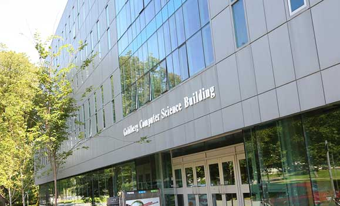

About
As stated in my "Home" page, I go to Dalhousie University and am enrolled in the Bachelors of Computer Science program. For High School, I went to Salwan Public School in my home town New Delhi, India. In my 12th Board Examinations, I got a staggering 96.4% which was the highest in my high school and at Dal, currently I have a 3.78 GPA I also have some part-time work experience wherein I worked as a cashier at a North Indian Restaurant "Ada-e-Handi". Moreover, I interned at Thought-Rover inc which provides counselling services to students looking to study abroad and help them in their visa application, I worked as a Customer and Technical services representative.
First Semester Grades
| Course | Grade |
|---|---|
| ASSC 1800: Computing and Society in History | B |
| CSCI 1105: Intro to Computer Programming | A+ |
| CSCI 1120: Intro to Computer Systems | A |
| CSCI 1300: Calculus in Computer Science | A+ |
| MGMT 1301: Interdisciplinary Management I | B+ |
Goldberg Computer Science Building
I mostly love studying at the Goldberg Computer Science Building, especially the fourth floor.
